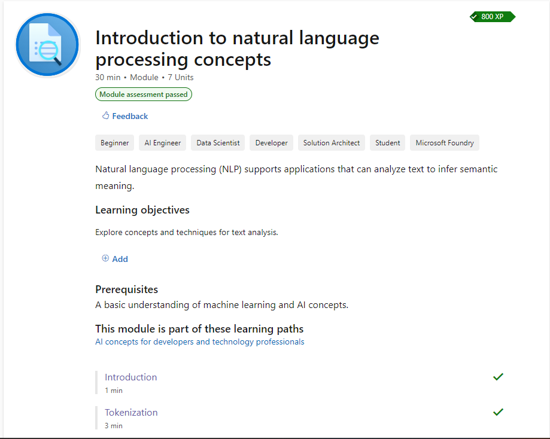

WW-P2: Introduction to NLP Concepts
Covered core NLP foundations via Microsoft Learn: tokenization, stop word removal, stemming, n-grams, and vector space models.
Microsoft Learn
NLP Foundations
View Technical Report →